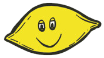

The music represents "a certain kind of freedom". This project launched officially in 2016 after Angus was already established internationally as one half of the australian sibling indie pop duo Angus & Julia Stone. Even though he had been primarily active with his sister Julia and also released material under his own name, he surprised us with new sounds under the pseudonym Dope Lemon . This project embraces more of a groove-driven experimental spirit than his other projects, with a slick guitar playing, summery grooves, and dreamy-eyed vocal. Dope Lemon's first album grew out of writing at home on his farm and jamming with friends in his recording studio on the property. The music, laidback and revelling in lush tones and arrangements, still has an intelligence about it that is typical to Angus as an artist. The presentation may be easy on the ear, but at its core, every song comes from a very singular musical vision. When life gives Angus Stone lemons, he makes sweet lemonade.
WATCH NOW ROSE PINK CADILLAC!
Let yourself forget about the global social climate burning around us with this laidback groove you could tie a hammock to. This song does what Angus' solo project has always done well: allowing you to just hit play and sink into its chilling rock atmosphere.
Listen via the music video, which stars the winged Cadillac itself!